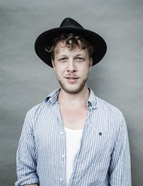

Early life
Ted Dwane (born Edward James Milton Dwane, 15 August 1984) is a British musician and photographer, best known for being the
bassist of the Grammy Award winning British folk rock band Mumford & Sons. Dwane is a keen photographer and has a photography blog on the Mumford & Sons website.
Dwane held his first solo photography exhibition, A show of faces, on 16 to 24 November 2013 in Shoreditch, London.On 31 May 2013, whilst performing at the Greek
Theatre Berkley, Dwane had an acute subdural hematoma which went undiagnosed for over a week.

Mumford & sons
Dwane is a founding member of the British folk band Mumford & Sons. He plays the double bass, bass guitar, drums, guitar and provides backing vocals.
Dwane performed with two of his current band members, Marcus Mumford and Winston Marshall, with Laura Marling before Mumford & Sons.Mumford & Sons had to cancel three
performances in America including the 2013 Bonnaroo Music Festival so Dwane could fully recover.Touring for the band resumed three weeks later for their headline slot
at Glastonbury Festival. After the operation, Dwane took to Twitter to thank fans for their support and posted a post-surgery pic. "Bear with a sore head!" he wrote.
"Thanks so much for all the well wishing, it seems to be working! I'm home."